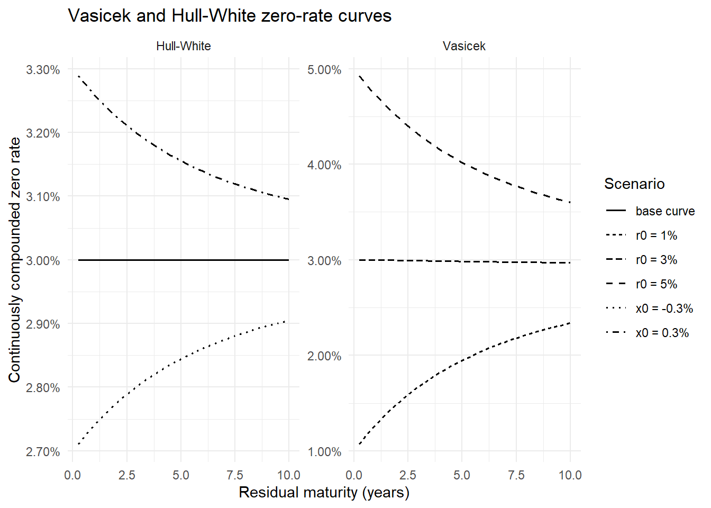
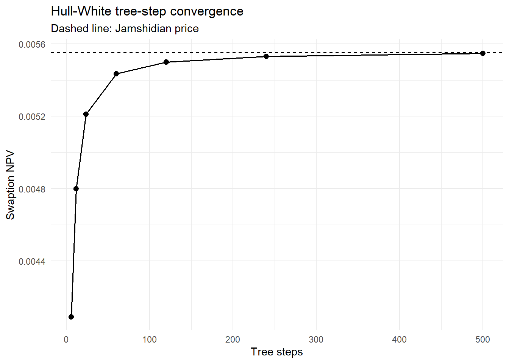

knitr::opts_chunk$set(
collapse = TRUE,
comment = "#>",
warning = FALSE,
message = FALSE
)
suppressPackageStartupMessages({
library(tidyverse)
library(ggthemes)
library(QuantLib)
library(GaussQuant)
library(tidyverse)
library(broom)
})第II-7章 Callable BondとHull–Whiteモデル
発行体コール権、Gaussian短期金利モデルおよびTree評価
15 第II-7章 Callable BondとHull–Whiteモデル
Callable Bondは、発行体があらかじめ定められた日と価格で期限前償還できる債券である。市場金利が低下すると、発行体は既存の高いクーポンを支払い続けるよりも、債券を期限前償還して低い金利で資金を再調達する誘因を持つ。
したがって、コール条項は発行体にとって価値を持つ一方、投資家にとっては不利な権利である。同じクーポン、満期および信用条件を持つ場合、Callable Bondの価格はオプションを含まないBullet Bondの価格以下となる。
概念的には、次の関係で表される。
\[ V_{\mathrm{callable}} = V_{\mathrm{bullet}} - V_{\mathrm{issuer\ call}} \]
発行体のコール権は、金利低下時に価値が上昇する。この性質は、固定金利を受け取り変動金利を支払うReceiver Swaptionに近い。複数のコール可能日がある場合、その権利はBermudan Receiver Swaptionに対応する。
ただし、Callable BondとSwaptionでは、元本交換、クーポンと固定レグ、決済、経過利子、行使価格および支払日の調整が必ずしも完全には一致しない。このため、本章では、
\[ V_{\mathrm{callable}} \approx V_{\mathrm{bullet}} - V_{\mathrm{Bermudan\ receiver\ swaption}} \]
をモデル構造の比較として確認する。
期限前償還権を評価するためには、将来の金利変動と各行使日における継続価値を扱う必要がある。本章では、初期金利期間構造へ適合できるHull–White 1-factorモデルと金利Treeを使用する。
15.1 1. Hull–White 1-factorモデル
Hull–Whiteモデルでは、短期金利 \(r_t\) を次のGaussian過程で表す。
\[ dr_t = \left[ \theta(t)-ar_t \right]dt + \sigma\,dW_t \]
ここで、\(a\) は平均回帰速度、\(\sigma\) は短期金利のボラティリティ、\(\theta(t)\) は時間依存のドリフトである。
\(a\) が大きいほど、金利ショックの影響は速く減衰する。\(\sigma\) が大きいほど将来金利の分布が広がり、金利オプションの価値は一般に高くなる。
Hull–Whiteモデルの重要な特徴は、\(\theta(t)\)を調整することによって、評価時点で観測された初期イールドカーブを再現できることである。モデルの確率部分を状態変数 \(x_t\) として分離すると、次のOrnstein–Uhlenbeck過程として表せる。
\[ dx_t = -ax_t\,dt + \sigma\,dW_t \]
短期金利は、初期期間構造を表す決定論的な部分と状態変数の和として解釈できる。
\[ r_t = \phi(t)+x_t \]
Hull–WhiteモデルはGaussianモデルであるため、短期金利が負になる可能性を持つ。前章までのNormalモデルと同様、ゼロ金利近傍を扱いやすい一方、極端な負の金利も理論上許容する。
15.2 2. 債券条件
5年満期、年率3%、半年払いの固定利付債を考える。市場利回りも3%とし、オプションを含まないBullet Bondの価格がおおむね額面付近となる条件を設定する。
最初の1年間をノンコール期間とし、その後の各クーポン日に額面100で期限前償還できるものとする。満期日は通常の元本償還日であるため、コール可能日から除外する。
trade_date <- GaussQuant::date_GQL("2024-04-15")
issue_date <- GaussQuant::date_GQL("2024-04-17")
maturity_date <- GaussQuant::date_GQL("2029-04-17")
GaussQuant::set_eval_date_GQL(trade_date)
coupon_rate <- 0.03
market_yield <- 0.03
settlement_days <- 2L
face_amount <- 100
call_price_clean <- 100
non_call_periods <- 2L
bond_calendar <- QuantLib::WeekendsOnly()
bond_day_counter <- QuantLib::ActualActual("Bond")
model_day_counter <- QuantLib::Actual365Fixed()
bond_compounding <- QuantLib::Compounding_Compounded_get()
bond_frequency <- QuantLib::Frequency_Semiannual_get()
bond_input_tbl <- tibble::tribble(
~input, ~value,
"trade_date", "2024-04-15",
"issue_date", "2024-04-17",
"maturity_date", "2029-04-17",
"coupon_rate", as.character(coupon_rate),
"market_yield", as.character(market_yield),
"settlement_days", as.character(settlement_days),
"face_amount", as.character(face_amount),
"call_price", as.character(call_price_clean),
"non_call_periods", as.character(non_call_periods)
)
GaussQuant::show_tbl_GQH(
bond_input_tbl,
"Callable bond input assumptions",
n = 20
)
#> # A tibble: 9 × 2
#> input value
#> <chr> <chr>
#> 1 trade_date 2024-04-15
#> 2 issue_date 2024-04-17
#> 3 maturity_date 2029-04-17
#> 4 coupon_rate 0.03
#> 5 market_yield 0.03
#> 6 settlement_days 2
#> 7 face_amount 100
#> 8 call_price 100
#> 9 non_call_periods 215.3 3. Bullet Bond
クーポンスケジュールを作成し、コール条項を含まない固定利付債を評価する。
bond_schedule <- QuantLib::Schedule(
issue_date,
maturity_date,
GaussQuant::period_months_GQL(6),
bond_calendar,
"Unadjusted",
"Unadjusted",
"Backward",
FALSE
)
bond_schedule_tbl <- GaussQuant::schedule_table_GQL(
bond_schedule
)
bullet_bond <- QuantLib::FixedRateBond(
settlement_days,
face_amount,
bond_schedule,
c(coupon_rate),
bond_day_counter
)
bullet_settlement_date <- tryCatch(
bullet_bond$settlementDate(),
error = function(e) NULL
)
bullet_clean_price <- GaussQuant::bond_clean_price_from_yield_safe_GQL(
bond = bullet_bond,
yield_rate = market_yield,
day_counter = bond_day_counter,
compounding = bond_compounding,
frequency = bond_frequency,
settlement_date = bullet_settlement_date
)
bullet_summary_tbl <- tibble::tribble(
~metric, ~value,
"coupon_rate", coupon_rate,
"market_yield", market_yield,
"clean_price_from_yield", bullet_clean_price,
"face_amount", face_amount
)
GaussQuant::show_tbl_GQH(
bond_schedule_tbl,
"Bullet bond schedule",
n = 20
)
#> # A tibble: 11 × 2
#> period schedule_date
#> <int> <date>
#> 1 1 2024-04-17
#> 2 2 2024-10-17
#> 3 3 2025-04-17
#> 4 4 2025-10-17
#> 5 5 2026-04-17
#> 6 6 2026-10-17
#> 7 7 2027-04-17
#> 8 8 2027-10-17
#> 9 9 2028-04-17
#> 10 10 2028-10-17
#> 11 11 2029-04-17
GaussQuant::show_tbl_GQH(
bullet_summary_tbl,
"Bullet bond summary",
n = 20
)
#> # A tibble: 4 × 2
#> metric value
#> <chr> <dbl>
#> 1 coupon_rate 0.03
#> 2 market_yield 0.03
#> 3 clean_price_from_yield 100.0
#> 4 face_amount 10015.4 4. 初期カーブとHull–Whiteモデル
Callable BondとSwaptionを同じ初期カーブとHull–Whiteパラメータで評価する。
本節では、年率3%のフラットカーブを使用する。Callable Bondの主目的はオプション構造とTree評価を確認することであり、複雑な市場カーブ構築は行わない。
hull_white_a <- 0.03
hull_white_sigma <- 0.01
tree_steps <- 120L
flat_curve <- GaussQuant::flat_curve_GQL(
reference_date = trade_date,
rate = market_yield,
day_counter = model_day_counter,
compounding = "Continuous"
)
flat_curve_handle <- QuantLib::YieldTermStructureHandle(
flat_curve
)
hull_white_model <- GaussQuant::hull_white_model_GQL(
term_structure = flat_curve_handle,
a = hull_white_a,
sigma = hull_white_sigma
)
hull_white_input_tbl <- tibble::tribble(
~parameter, ~value,
"mean_reversion_a", hull_white_a,
"sigma", hull_white_sigma,
"tree_steps", tree_steps,
"flat_curve_rate", market_yield
)
GaussQuant::show_tbl_GQH(
hull_white_input_tbl,
"Hull-White model assumptions",
n = 20
)
#> # A tibble: 4 × 2
#> parameter value
#> <chr> <dbl>
#> 1 mean_reversion_a 0.03
#> 2 sigma 0.01
#> 3 tree_steps 120
#> 4 flat_curve_rate 0.0315.5 5. コールスケジュール
スケジュールには発行日と満期日も含まれる。最初の2クーポン期間をノンコールとし、満期日を除く残りのクーポン日をコール可能日とする。
bond_schedule_dates <- GaussQuant::schedule_date_vector_GQL(
bond_schedule
)
first_call_position <- non_call_periods + 1L
call_dates <- bond_schedule_dates[
first_call_position:
(length(bond_schedule_dates) - 1L)
]
call_schedule <- GaussQuant::make_callability_schedule_GQL(
call_dates = call_dates,
call_price_clean = call_price_clean
)
call_schedule_tbl <- tibble::tibble(
call_number = seq_along(call_dates),
call_date = call_dates,
call_price = rep(
call_price_clean,
length(call_dates)
)
)
GaussQuant::show_tbl_GQH(
call_schedule_tbl,
"Callable bond exercise schedule",
n = 20
)
#> # A tibble: 8 × 3
#> call_number call_date call_price
#> <int> <date> <dbl>
#> 1 1 2025-04-17 100
#> 2 2 2025-10-17 100
#> 3 3 2026-04-17 100
#> 4 4 2026-10-17 100
#> 5 5 2027-04-17 100
#> 6 6 2027-10-17 100
#> 7 7 2028-04-17 100
#> 8 8 2028-10-17 10015.6 6. Callable BondのTree評価
Callable Bondを作成し、Hull–Whiteモデルに基づく金利TreeをPricing Engineとして設定する。
各Tree nodeでは、発行体がその時点でコールする価値と、債券を存続させる価値が比較される。発行体にとってコールが有利であれば期限前償還が選択される。
callable_bond <- QuantLib::CallableFixedRateBond(
settlement_days,
face_amount,
bond_schedule,
c(coupon_rate),
bond_day_counter,
"Unadjusted",
call_price_clean,
issue_date,
call_schedule
)
callable_bond_engine <- QuantLib::TreeCallableFixedRateBondEngine(
hull_white_model,
tree_steps
)
callable_bond$setPricingEngine(
callable_bond_engine
)
#> NULL
callable_clean_price <- GaussQuant::callable_bond_clean_price_safe_GQL(
callable_bond
)
callable_dirty_price <- GaussQuant::callable_bond_dirty_price_safe_GQL(
callable_bond
)
callable_settlement_value <- GaussQuant::callable_bond_settlement_value_safe_GQL(
callable_bond
)
embedded_call_value <- bullet_clean_price -
callable_clean_price
callable_summary_tbl <- tibble::tribble(
~metric, ~value,
"bullet_clean_price", bullet_clean_price,
"callable_clean_price", callable_clean_price,
"callable_dirty_price", callable_dirty_price,
"callable_settlement_value", callable_settlement_value,
"embedded_call_value", embedded_call_value
)
GaussQuant::show_tbl_GQH(
callable_summary_tbl,
"Callable bond summary",
n = 20
)
#> # A tibble: 5 × 2
#> metric value
#> <chr> <dbl>
#> 1 bullet_clean_price 100.0
#> 2 callable_clean_price 98.0
#> 3 callable_dirty_price 98.0
#> 4 callable_settlement_value 98.0
#> 5 embedded_call_value 2.00Callable Bond価格がBullet Bond価格を下回る差額は、投資家が発行体へ与えている期限前償還権の価値と解釈できる。
15.7 7. Hull–Whiteパラメータ感応度
短期金利のボラティリティが高いほど、将来金利が大きく低下する可能性も高くなる。したがって、発行体のコール権は一般に高くなり、Callable Bond価格は低下する。
平均回帰速度 \(a\) は、金利ショックがどの程度の速さで消滅するかを決める。平均回帰が速い場合、長い期間にわたる金利ショックの影響は小さくなる。
callable_sensitivity_input_tbl <- tibble::tribble(
~scenario, ~mean_reversion, ~sigma,
"low_sigma", 0.03, 0.005,
"base", 0.03, 0.010,
"high_sigma", 0.03, 0.020,
"slow_reversion", 0.01, 0.010,
"fast_reversion", 0.10, 0.010
)
callable_sensitivity_tbl <- purrr::pmap_dfr(
callable_sensitivity_input_tbl,
function(
scenario,
mean_reversion,
sigma
) {
model_i <- GaussQuant::hull_white_model_GQL(
term_structure = flat_curve_handle,
a = mean_reversion,
sigma = sigma
)
engine_i <- QuantLib::TreeCallableFixedRateBondEngine(
model_i,
tree_steps
)
callable_bond$setPricingEngine(
engine_i
)
callable_price_i <- GaussQuant::callable_bond_clean_price_safe_GQL(
callable_bond
)
tibble::tibble(
scenario = scenario,
mean_reversion = mean_reversion,
sigma = sigma,
callable_clean_price = callable_price_i,
embedded_call_value = bullet_clean_price -
callable_price_i
)
}
)
callable_bond$setPricingEngine(
callable_bond_engine
)
#> NULL
GaussQuant::show_tbl_GQH(
callable_sensitivity_tbl,
"Callable bond Hull-White sensitivity",
n = 20
)
#> # A tibble: 5 × 5
#> scenario mean_reversion sigma callable_clean_price embedded_call_value
#> <chr> <dbl> <dbl> <dbl> <dbl>
#> 1 low_sigma 0.03 0.005 99.0 1.04
#> 2 base 0.03 0.01 98.0 2.00
#> 3 high_sigma 0.03 0.02 96.1 3.91
#> 4 slow_reversion 0.01 0.01 97.9 2.08
#> 5 fast_reversion 0.1 0.01 98.2 1.76パラメータ感応度は他の条件を固定した比較である。市場カリブレーション後のパラメータは互いに独立ではないため、実務上のリスク分析ではカーブとボラティリティ市場を同時に考慮する必要がある。
15.8 8. Bermudan Receiver Swaption
発行体が債券をコールする誘因は、市場金利がクーポン金利を下回ったときに強くなる。これは固定金利を受け取るReceiver Swapの価値が、金利低下時に上昇する性質と対応する。
そこで、債券のクーポンスケジュールを固定レグとするReceiver Swapを作成し、Callable Bondと同じ行使日を持つBermudan Receiver Swaptionを評価する。
floating_index <- QuantLib::JPYLibor(
GaussQuant::period_months_GQL(6),
flat_curve_handle
)
tryCatch(
floating_index$addFixing(
trade_date,
market_yield,
TRUE
),
error = function(e) NULL
)
#> NULL
underlying_receiver_swap <- QuantLib::VanillaSwap(
QuantLib::Swap_Receiver_get(),
face_amount,
bond_schedule,
coupon_rate,
bond_day_counter,
bond_schedule,
floating_index,
0,
bond_day_counter
)
bermudan_receiver_engine <- GaussQuant::hull_white_swaption_engine_GQL(
term_structure = flat_curve_handle,
a = hull_white_a,
sigma = hull_white_sigma,
method = "tree",
time_steps = tree_steps
)
bermudan_receiver_swaption <- GaussQuant::make_bermudan_swaption_GQL(
underlying_swap = underlying_receiver_swap,
exercise_dates = call_dates,
pricing_engine = bermudan_receiver_engine
)
bermudan_receiver_npv <- GaussQuant::swaption_npv_GQL(
bermudan_receiver_swaption
)
receiver_swaption_value_per_100 <- bermudan_receiver_npv /
face_amount *
100
bullet_minus_receiver_swaption <- bullet_clean_price -
receiver_swaption_value_per_100
callable_comparison_tbl <- tibble::tribble(
~valuation, ~value,
"bullet_bond_clean_price", bullet_clean_price,
"callable_bond_clean_price", callable_clean_price,
"receiver_swaption_value_per_100", receiver_swaption_value_per_100,
"bullet_minus_receiver_swaption", bullet_minus_receiver_swaption,
"pricing_difference", callable_clean_price -
bullet_minus_receiver_swaption
)
GaussQuant::show_tbl_GQH(
callable_comparison_tbl,
"Callable bond and Bermudan receiver swaption comparison",
n = 20
)
#> # A tibble: 5 × 2
#> valuation value
#> <chr> <dbl>
#> 1 bullet_bond_clean_price 100.0
#> 2 callable_bond_clean_price 98.0
#> 3 receiver_swaption_value_per_100 1.89
#> 4 bullet_minus_receiver_swaption 98.1
#> 5 pricing_difference -0.112Callable BondとBermudan Receiver Swaptionは、同じHull–Whiteモデルと行使日を使用している。しかし、次の条件は完全には一致していない。
- 債券の元本償還とSwapの元本交換
- Clean priceとSwaption NPVの決済単位
- 経過利子
- コール価格
- 固定クーポンとSwap固定レグ
- 浮動レグのFixingおよび支払条件
したがって、pricing_differenceが厳密にゼロとなることは要求しない。この比較の目的は、Callable Bondに埋め込まれた金利低下時のオプション価値を、Receiver Swaptionとの関係から理解することである。
15.9 9. Vasicekモデルとの違い
Vasicekモデルは、短期金利が一定の長期平均へ回帰するGaussianモデルである。
\[ dr_t = a(b-r_t)dt + \sigma\,dW_t \]
ここで、\(b\) は長期平均金利である。
Hull–WhiteモデルもGaussian平均回帰モデルであるが、時間依存ドリフト \(\theta(t)\) を導入することによって、評価時点のイールドカーブへ適合できる。
| 項目 | Vasicek | Hull–White |
|---|---|---|
| 平均回帰先 | 一定の長期平均 \(b\) | 時間依存ドリフトで調整 |
| 初期カーブ | 一般には完全適合しない | 初期カーブへ適合可能 |
| 主な入力 | \(a,b,\sigma,r_0\) | 初期カーブ、\(a,\sigma\) |
| 金利分布 | Gaussian | Gaussian |
| 負の金利 | 許容 | 許容 |
Vasicekモデルは金利期間構造の長期的な形状をモデルパラメータから生成する。Hull–Whiteモデルは、観測カーブを出発点として、その周りの確率的変動を表現する。
15.10 10. VasicekとHull–Whiteのゼロ金利曲線
Vasicekでは初期短期金利を変えると、モデルが生成する期間構造全体が変化する。Hull–Whiteでは状態変数がゼロであれば初期カーブを再現し、状態変数のショックが平均回帰しながら期間構造へ影響する。
maturity_grid <- seq(
0.25,
10,
by = 0.25
)
vasicek_scenario_tbl <- tibble::tribble(
~scenario, ~short_rate,
"r0 = 1%", 0.01,
"r0 = 3%", 0.03,
"r0 = 5%", 0.05
)
vasicek_curve_tbl <- purrr::pmap_dfr(
vasicek_scenario_tbl,
function(
scenario,
short_rate
) {
tibble::tibble(
maturity = maturity_grid,
zero_rate = purrr::map_dbl(
maturity_grid,
function(maturity_value) {
GaussQuant::vasicek_zero_rate_GQL(
time = 0,
maturity = maturity_value,
mean_reversion = 0.30,
sigma = 0.01,
long_run_rate = 0.03,
short_rate = short_rate
)
}
),
model = "Vasicek",
scenario = scenario
)
}
)
hull_white_scenario_tbl <- tibble::tribble(
~scenario, ~state_variable,
"x0 = -0.3%", -0.003,
"base curve", 0.000,
"x0 = 0.3%", 0.003
)
hull_white_curve_tbl <- purrr::pmap_dfr(
hull_white_scenario_tbl,
function(
scenario,
state_variable
) {
tibble::tibble(
maturity = maturity_grid,
zero_rate = purrr::map_dbl(
maturity_grid,
function(maturity_value) {
GaussQuant::hull_white_zero_rate_GQL(
time = 0,
maturity = maturity_value,
curve = flat_curve,
mean_reversion = 0.30,
sigma = 0.01,
state_variable = state_variable
)
}
),
model = "Hull-White",
scenario = scenario
)
}
)
short_rate_curve_tbl <- dplyr::bind_rows(
vasicek_curve_tbl,
hull_white_curve_tbl
)
short_rate_curve_plot <- ggplot2::ggplot(
short_rate_curve_tbl,
ggplot2::aes(
x = .data$maturity,
y = .data$zero_rate,
group = .data$scenario,
linetype = .data$scenario
)
) +
ggplot2::geom_line(
linewidth = 0.7
) +
ggplot2::facet_wrap(
~model,
scales = "free_y"
) +
ggplot2::scale_y_continuous(
labels = function(x) sprintf("%.2f%%", 100 * x)
) +
ggplot2::labs(
title = "Vasicek and Hull-White zero-rate curves",
x = "Residual maturity (years)",
y = "Continuously compounded zero rate",
linetype = "Scenario"
) +
ggplot2::theme_minimal()
GaussQuant::show_tbl_GQH(
short_rate_curve_tbl,
"Short-rate model zero-rate curves",
n = 30
)
#> # A tibble: 30 × 4
#> maturity zero_rate model scenario
#> <dbl> <dbl> <chr> <chr>
#> 1 0.25 0.0107 Vasicek r0 = 1%
#> 2 0.5 0.0114 Vasicek r0 = 1%
#> 3 0.75 0.0121 Vasicek r0 = 1%
#> 4 1 0.0127 Vasicek r0 = 1%
#> 5 1.25 0.0133 Vasicek r0 = 1%
#> 6 1.5 0.0139 Vasicek r0 = 1%
#> 7 1.75 0.0144 Vasicek r0 = 1%
#> 8 2 0.0149 Vasicek r0 = 1%
#> 9 2.25 0.0154 Vasicek r0 = 1%
#> 10 2.5 0.0159 Vasicek r0 = 1%
#> # ℹ 20 more rows
print(short_rate_curve_plot)
Hull–Whiteのbase curveが初期フラットカーブ付近に位置することが、初期期間構造へ適合する性質を表している。状態変数のショックは短期側で大きく、満期が長くなるほど平均回帰によって影響が小さくなる。
15.11 11. Hull–Whiteモデルのカリブレーション
Hull–Whiteモデルのパラメータ \(a\) と \(\sigma\) は、Swaption市場の価格またはインプライド・ボラティリティへ適合させる。
本節では、1年後に開始して5年間継続する1Y×5Y ATM Swaptionを使用する。市場Normal volatilityを36.06bpとし、平均回帰速度 \(a=0.03\) を固定して、短期金利ボラティリティ \(\sigma\) だけを推定する。
単一の市場商品から \(a\) と \(\sigma\) の双方を安定して識別することはできない。複数満期のSwaptionを利用する場合には、複数のCalibration Helperを同時に用いて両パラメータを推定する。
15.11.1 11.1 1Y×5Y ATM Swap
GaussQuant::set_eval_date_GQL(trade_date)
calibration_calendar <- QuantLib::Japan()
calibration_day_counter <- QuantLib::Actual365Fixed()
swaption_expiry_date <- calibration_calendar$advance(
trade_date,
1L,
"Years"
)
swap_effective_date <- calibration_calendar$advance(
swaption_expiry_date,
2L,
"Days"
)
swap_maturity_date <- calibration_calendar$advance(
swap_effective_date,
5L,
"Years"
)
calibration_schedule <- QuantLib::Schedule(
swap_effective_date,
swap_maturity_date,
GaussQuant::period_months_GQL(6),
calibration_calendar,
"ModifiedFollowing",
"ModifiedFollowing",
"Backward",
FALSE
)
calibration_index <- QuantLib::JPYLibor(
GaussQuant::period_months_GQL(6),
flat_curve_handle
)
calibration_annuity <- GaussQuant::swap_annuity_from_schedule_GQL(
schedule = calibration_schedule,
curve = flat_curve,
day_counter = calibration_day_counter
)
calibration_forward_swap_rate <- GaussQuant::forward_swap_rate_from_schedule_GQL(
schedule = calibration_schedule,
curve = flat_curve,
day_counter = calibration_day_counter
)
calibration_swap_tbl <- tibble::tribble(
~metric, ~value,
"expiry_date", GaussQuant::iso_GQL(swaption_expiry_date),
"swap_effective_date", GaussQuant::iso_GQL(swap_effective_date),
"swap_maturity_date", GaussQuant::iso_GQL(swap_maturity_date),
"annuity", as.character(calibration_annuity),
"forward_swap_rate", as.character(calibration_forward_swap_rate)
)
GaussQuant::show_tbl_GQH(
GaussQuant::schedule_table_GQL(
calibration_schedule
),
"1Yx5Y fixed-leg schedule",
n = 20
)
#> # A tibble: 11 × 2
#> period schedule_date
#> <int> <date>
#> 1 1 2025-04-17
#> 2 2 2025-10-17
#> 3 3 2026-04-17
#> 4 4 2026-10-19
#> 5 5 2027-04-19
#> 6 6 2027-10-18
#> 7 7 2028-04-17
#> 8 8 2028-10-17
#> 9 9 2029-04-17
#> 10 10 2029-10-17
#> 11 11 2030-04-17
GaussQuant::show_tbl_GQH(
calibration_swap_tbl,
"1Yx5Y forward swap summary",
n = 20
)
#> # A tibble: 5 × 2
#> metric value
#> <chr> <chr>
#> 1 expiry_date 2025-04-15
#> 2 swap_effective_date 2025-04-17
#> 3 swap_maturity_date 2030-04-17
#> 4 annuity 4.47364922408499
#> 5 forward_swap_rate 0.030226272742966515.11.2 11.2 One-helper calibration
market_normal_volatility <- 36.06 / 10000
fixed_mean_reversion <- 0.03
initial_sigma <- 0.0001
calibration_model <- GaussQuant::hull_white_model_GQL(
term_structure = flat_curve_handle,
a = fixed_mean_reversion,
sigma = initial_sigma
)
calibration_jamshidian_engine <- QuantLib::JamshidianSwaptionEngine(
calibration_model
)
swaption_helper <- QuantLib::SwaptionHelper(
swaption_expiry_date,
GaussQuant::period_years_GQL(5),
QuantLib::QuoteHandle(
QuantLib::SimpleQuote(
market_normal_volatility
)
),
calibration_index,
GaussQuant::period_months_GQL(6),
calibration_day_counter,
calibration_day_counter,
flat_curve_handle,
QuantLib::BlackCalibrationHelper_RelativePriceError_get(),
calibration_forward_swap_rate,
1,
QuantLib::VolatilityType_Normal_get()
)
swaption_helper$setPricingEngine(
calibration_jamshidian_engine
)
#> NULL
calibration_helper_vector <- GaussQuant::push_calibration_helpers_GQL(
list(swaption_helper)
)
calibration_end_criteria <- QuantLib::EndCriteria(
10000L,
100L,
1e-6,
1e-8,
1e-8
)
calibration_model$calibrate(
calibration_helper_vector,
QuantLib::LevenbergMarquardt(),
calibration_end_criteria,
QuantLib::NoConstraint(),
numeric(),
c(
TRUE,
FALSE
)
)
#> NULL
calibration_parameter_array <- calibration_model$params()
calibrated_parameters <- c(
as.numeric(calibration_parameter_array[1]),
as.numeric(calibration_parameter_array[2])
)
calibration_result_tbl <- tibble::tribble(
~parameter, ~value,
"a_fixed", calibrated_parameters[[1]],
"sigma_calibrated", calibrated_parameters[[2]],
"market_normal_vol", market_normal_volatility
)
GaussQuant::show_tbl_GQH(
calibration_result_tbl,
"Hull-White one-helper calibration",
n = 20
)
#> # A tibble: 3 × 2
#> parameter value
#> <chr> <dbl>
#> 1 a_fixed 0.03
#> 2 sigma_calibrated 0.00334
#> 3 market_normal_vol 0.00361
calibration_parameter_array <- calibration_model$params()
calibration_result_tbl <- tibble::tribble(
~parameter, ~value,
"a_fixed", calibrated_parameters[[1]],
"sigma_calibrated", calibrated_parameters[[2]],
"market_normal_vol", market_normal_volatility
)
GaussQuant::show_tbl_GQH(
calibration_result_tbl,
"Hull-White one-helper calibration",
n = 20
)
#> # A tibble: 3 × 2
#> parameter value
#> <chr> <dbl>
#> 1 a_fixed 0.03
#> 2 sigma_calibrated 0.00334
#> 3 market_normal_vol 0.00361c(TRUE, FALSE)は、最初のパラメータ \(a\) を固定し、2番目のパラメータ \(\sigma\) だけを最適化する指定である。
15.12 12. European SwaptionのEngine比較
カリブレーションに用いた1Y×5Y ATM Swapを原資産とするEuropean Payer Swaptionを作成し、次の3つの方法で評価する。
- Jamshidian decomposition
- Hull–White Tree
- Bachelier analytic engine
JamshidianとTreeは同じカリブレーション後のHull–Whiteモデルを使用する。Bachelier Engineは市場Normal volatilityを直接使用する。
calibration_underlying_swap <- QuantLib::VanillaSwap(
QuantLib::Swap_Payer_get(),
1,
calibration_schedule,
calibration_forward_swap_rate,
calibration_day_counter,
calibration_schedule,
calibration_index,
0,
calibration_day_counter
)
calibration_european_swaption <- QuantLib::Swaption(
calibration_underlying_swap,
QuantLib::EuropeanExercise(
swaption_expiry_date
)
)
jamshidian_engine <- QuantLib::JamshidianSwaptionEngine(
calibration_model
)
calibration_european_swaption$setPricingEngine(
jamshidian_engine
)
#> NULL
npv_jamshidian <- GaussQuant::instrument_npv_safe_GQL(
calibration_european_swaption
)
tree_engine_500 <- QuantLib::TreeSwaptionEngine(
calibration_model,
500L
)
calibration_european_swaption$setPricingEngine(
tree_engine_500
)
#> NULL
npv_tree_500 <- GaussQuant::instrument_npv_safe_GQL(
calibration_european_swaption
)
bachelier_engine <- QuantLib::BachelierSwaptionEngine(
flat_curve_handle,
QuantLib::QuoteHandle(
QuantLib::SimpleQuote(
market_normal_volatility
)
)
)
calibration_european_swaption$setPricingEngine(
bachelier_engine
)
#> NULL
npv_bachelier <- GaussQuant::instrument_npv_safe_GQL(
calibration_european_swaption
)
engine_comparison_tbl <- tibble::tribble(
~engine, ~npv,
"Jamshidian", npv_jamshidian,
"Hull-White tree 500", npv_tree_500,
"Bachelier", npv_bachelier
) |>
dplyr::mutate(
difference_vs_bachelier = .data$npv -
npv_bachelier,
difference_vs_jamshidian = .data$npv -
npv_jamshidian
)
GaussQuant::show_tbl_GQH(
engine_comparison_tbl,
"1Yx5Y swaption engine comparison",
n = 20
)
#> # A tibble: 3 × 4
#> engine npv difference_vs_bachelier difference_vs_jamshidian
#> <chr> <dbl> <dbl> <dbl>
#> 1 Jamshidian 0.00555 -0.0000000580 0
#> 2 Hull-White tree 500 0.00555 -0.00000395 -0.00000390
#> 3 Bachelier 0.00555 0 0.0000000580カリブレーション対象と同じATM Swaptionであるため、Hull–White価格とBachelier市場価格は近い値になることが期待される。Jamshidianと十分に細かいTreeの差は、主にTree離散化誤差を表す。
15.13 13. Tree stepの収束
Hull–White Treeでは、時間軸と金利状態を有限個のnodeへ離散化する。Tree stepが少ない場合、金利分布とオプションPayoffの非線形性を粗くしか表現できない。
同じEuropean Swaptionを異なるTree stepで評価し、Jamshidian価格への収束を確認する。
tree_step_grid <- c(
6L,
12L,
24L,
60L,
120L,
240L,
500L
)
tree_convergence_tbl <- purrr::map_dfr(
tree_step_grid,
function(tree_step) {
tree_engine_i <- QuantLib::TreeSwaptionEngine(
calibration_model,
tree_step
)
calibration_european_swaption$setPricingEngine(
tree_engine_i
)
tree_npv_i <- GaussQuant::instrument_npv_safe_GQL(
calibration_european_swaption
)
tibble::tibble(
tree_steps = tree_step,
npv = tree_npv_i,
difference_vs_jamshidian = tree_npv_i -
npv_jamshidian,
difference_vs_bachelier = tree_npv_i -
npv_bachelier
)
}
)
tree_convergence_plot <- ggplot2::ggplot(
tree_convergence_tbl,
ggplot2::aes(
x = .data$tree_steps,
y = .data$npv
)
) +
ggplot2::geom_line(
linewidth = 0.7
) +
ggplot2::geom_point(
size = 2.2
) +
ggplot2::geom_hline(
yintercept = npv_jamshidian,
linetype = "dashed"
) +
ggplot2::labs(
title = "Hull-White tree-step convergence",
subtitle = "Dashed line: Jamshidian price",
x = "Tree steps",
y = "Swaption NPV"
) +
ggplot2::theme_minimal()
GaussQuant::show_tbl_GQH(
tree_convergence_tbl,
"Hull-White tree convergence",
n = 20
)
#> # A tibble: 7 × 4
#> tree_steps npv difference_vs_jamshidian difference_vs_bachelier
#> <int> <dbl> <dbl> <dbl>
#> 1 6 0.00409 -0.00146 -0.00146
#> 2 12 0.00480 -0.000753 -0.000753
#> 3 24 0.00521 -0.000340 -0.000340
#> 4 60 0.00543 -0.000117 -0.000117
#> 5 120 0.00550 -0.0000508 -0.0000509
#> 6 240 0.00553 -0.0000194 -0.0000194
#> 7 500 0.00555 -0.00000390 -0.00000395
print(tree_convergence_plot)
Tree stepを増やすほど、Tree価格がJamshidian価格へ近づくことを確認する。Bermudan SwaptionやCallable Bondには一般的なJamshidian解析解を利用できないため、European SwaptionでTree精度を検証してから、早期行使商品へ同じTree設定を適用することが重要である。
15.14 14. まとめ
Callable Bondは、Bullet Bondから発行体の期限前償還権を差し引いた商品として理解できる。金利が低下すると発行体のコール権は価値を持ち、投資家が保有するCallable Bondの価格上昇は抑制される。
発行体のコール権は、金利低下時に価値が上昇するReceiver Swaptionと同じ方向の金利オプション性を持つ。複数のコール日がある場合にはBermudan Receiver Swaptionに近い。ただし、債券とSwapでは元本、決済およびキャッシュフロー条件が完全には一致しないため、価格関係は近似として解釈する必要がある。
Hull–WhiteモデルはGaussian平均回帰型の短期金利モデルであり、時間依存ドリフトによって初期イールドカーブへ適合できる。Vasicekモデルがパラメータから期間構造を生成するのに対し、Hull–Whiteモデルは観測カーブを出発点として、その周りの確率変動を表現する。
Hull–Whiteの平均回帰速度 \(a\) は金利ショックの持続性を、\(\sigma\) は短期金利変動の大きさを表す。本章では、1Y×5Y ATM SwaptionのNormal volatilityを使い、\(a\)を固定して\(\sigma\)をカリブレーションした。
European Swaptionでは、Jamshidian decomposition、Hull–White TreeおよびBachelier Engineを比較した。Tree stepを増やすとTree価格はJamshidian価格へ近づく。Callable BondやBermudan Swaptionのような早期行使商品では、このTree精度を確認したうえで評価する必要がある。
chapter07_summary_tbl <- tibble::tribble(
~section, ~main_result,
"Callable Bond", "Bullet bond minus issuer call option",
"Receiver Swaption", "Interest-rate direction of the issuer call",
"Vasicek and Hull-White", "Initial-curve fit and mean reversion",
"Calibration", "Fixed a and calibrated sigma",
"Tree convergence", "Convergence toward Jamshidian pricing"
)
GaussQuant::show_tbl_GQH(
chapter07_summary_tbl,
"Chapter II-7 summary",
n = 20
)
#> # A tibble: 5 × 2
#> section main_result
#> <chr> <chr>
#> 1 Callable Bond Bullet bond minus issuer call option
#> 2 Receiver Swaption Interest-rate direction of the issuer call
#> 3 Vasicek and Hull-White Initial-curve fit and mean reversion
#> 4 Calibration Fixed a and calibrated sigma
#> 5 Tree convergence Convergence toward Jamshidian pricing
cat(
"\nChapter II-7 Callable Bond and Hull-White model completed successfully.\n"
)
#>
#> Chapter II-7 Callable Bond and Hull-White model completed successfully.